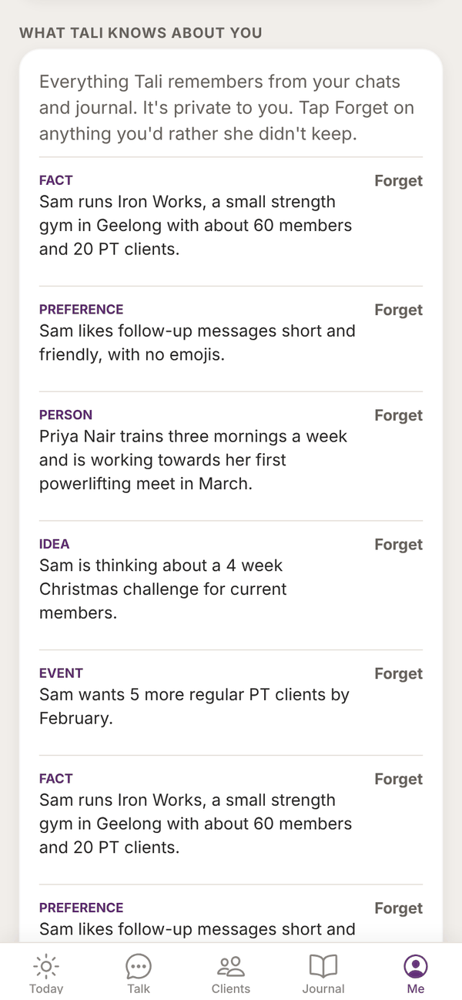
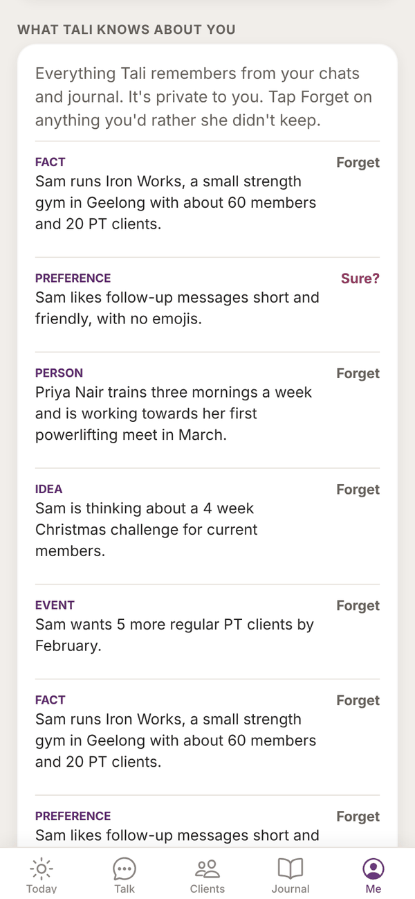
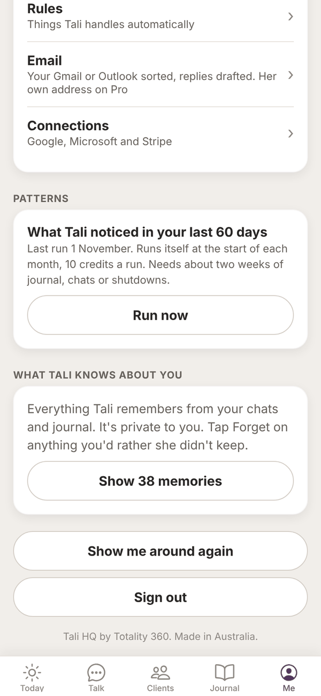

Tali HQ guide
What Tali knows
See everything Tali remembers about you, make her forget anything, and understand her level and monthly patterns.
Tali remembers what you tell her so you never explain your business twice. Everything she keeps about you is listed on the Me screen, private to you, and you can make her forget any of it with two taps. Free
See what Tali remembers#


- Tap Me at the bottom.
- Scroll to What Tali knows about you.
- Tap Show memories (it shows how many, for example Show 38 memories).
- The 15 newest show first. Tap Show all to see the rest, or Show fewer.
- Tap Hide memories to fold the list away again.
Each memory has a type above it:
- Fact: about you or your business
- Preference: how you like things done
- Person: about someone, like a client
- Idea: something you're thinking about
- Event: something that happened or is coming up
- Lesson: something Tali learnt at Night school Pro
Make Tali forget something#
Tap Forget next to a memory. It changes to Sure?. Tap again and it's gone for good.
You can also forget things about one person from their page in Clients: open them and tap Forget this under What Tali knows. Tali HQ See Clients and leads.
Where her memories come from#
- Talk: up to three new things from each message you send, like people, clients, goals, preferences and decisions.
- Your journal: when she writes your brief or Friday check-in, she picks up anything worth keeping from new entries that aren't private.
- Night school: what she learns studying your topics. Pro
Tali doesn't save passwords, card or bank numbers, phone numbers, addresses or health details as memories. She treats everything she remembers as information about you, never as instructions.
Tali's level#
Tali's level is on the top card of Today. She levels up as she learns your business and as you put things in.
| What happens | XP |
|---|---|
| Each thing she remembers about you | 2 |
| Each chat she has learnt from | 2 |
| Each journal entry you write | 3 |
| Each job she finishes for you | 1 |
| Each night of Night school | 15 |
| Level | Name | From |
|---|---|---|
| 1 | New starter | 0 XP |
| 2 | Junior operator | 100 XP |
| 3 | Operator | 300 XP |
| 4 | Senior operator | 700 XP |
| 5 | Right hand | 1,400 XP |
| 6 | Office manager | 2,200 XP |
| 7 | Operations manager | 3,200 XP |
| 8 | General manager | 4,500 XP |
| 9 | Chief of staff | 6,000 XP |
The card shows her XP and how much to the next level. Forgetting memories can lower her XP. The level is just for fun and doesn't change what she can do.
Patterns Pro#
Once a month, Tali reads your last 60 days, your journal, shutdown moods, reminders done and missed, clients added and gone quiet, invoices, commitments, goals and how often you talk to her, and names up to three patterns, each with the numbers behind it and a suggestion where she has one.

- It runs by itself at the start of each month and uses 10 credits.
- It needs about two weeks of journal, chats or shutdowns.
- You get a notification, "Tali noticed something".
- It shows under More from Tali, Tali noticed on Today, and on the Tali's side of Journal. Tap Got it once you've read it.
- On Me, under Patterns, tap Run now to run it straight away (10 credits). It replaces this month's.
On Free and Tali HQ, the Patterns section on Me says "Patterns are part of Pro" with Plans.
Questions#
Can I make Tali forget everything?
Forget memories one at a time on the Me screen. To remove everything, delete your account in Settings. See Privacy and your data.
Does anyone else see what Tali remembers about me?
No. Your memories are private to your account. Tali never uses one person's details in someone else's account.
Why doesn't Tali remember something I told her?
She saves up to three things per message, and only things worth keeping. If something matters, tell her plainly: "remember that Priya pays monthly".
Does forgetting a memory delete my chat?
No. It only removes the memory. The chat stays in Talk until you delete it.
Why did Tali's level go down?
XP counts what she currently knows and what you've put in. If you forget memories or delete journal entries, her XP drops with them.